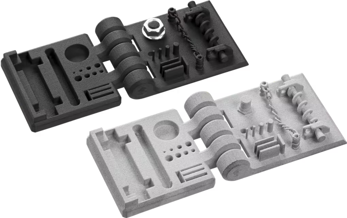

Supermaker SLS1518
La SuperMaker SLS1518 est une imprimante 3D SLS compacte : un laser fritte de la poudre de nylon couche par couche, sans aucun support. Elle produit des pièces fonctionnelles aux formes libres, dans un format de petite machine d'atelier.

Fiche technique
| Dimensions imprimable | 150×150×180mm |
|---|---|
| Possibilité matière | Pa11, Pa12, TPU, PAGF, PACF |
| Tolérances | +-0.05mm |
| Supports | Aucun |
| Technologie | Frittage laser sélectif (SLS) |
Comment fonctionne la Supermaker SLS1518 ?
Une fine couche de poudre est étalée sur le plateau, le laser dessine la forme de la pièce et fusionne les grains, puis le plateau descend et la couche suivante est déposée. La poudre non frittée reste autour de la pièce et la soutient : pas besoin de supports, donc pas de traces à retirer.
Une fois l'impression terminée et refroidie, les pièces sont sorties du bloc de poudre puis dépoudrées. La poudre non utilisée est tamisée et réutilisée en partie.
Capacités & limites
- Imprimer des formes impossibles en FDM : canaux internes, treillis, pièces imbriquées
- Produire des charnières et des assemblages mobiles en une seule impression
- Fabriquer des pièces en nylon solides et légères
- Remplir le volume de plusieurs pièces à la fois pour les petites séries
- Imprimer des pièces souples en TPU
- Volume compact : pour des pièces plus grandes, nous utilisons la SLS3540 Pro
- Surface légèrement granuleuse à l'état brut
- Teinture ou microbillage à prévoir si l'aspect compte
Pour quels projets ?
- Petites pièces fonctionnelles en nylon
- Clips, charnières et pièces imbriquées
- Prototypes proches de la pièce injectée
- Petites séries de pièces techniques
- Pièces souples en TPU
La SLS1518 nous sert pour les petites pièces en nylon et les essais de matière. Elle complète la SLS3540 Pro, qui prend le relais dès que les pièces sont plus grandes ou plus nombreuses.
Matériaux compatibles

Nylon PA12 gris
Polyvalent · Résistant · Économique
Voir la fiche →
Nylon PA12 série
Reproductible · Industriel · Série
Voir la fiche →
Rilsan PA11
Polyvalent · Résistant · Flexible
Voir la fiche →
PA11
Biobased · Souple · Biocompatible
Voir la fiche →
PA11 CF
Rigide · Léger · Structurel
Voir la fiche →
PA11 ESD
Antistatique · Protecteur · Électronique
Voir la fiche →
PA12 chargé verre
Rigide · Stable · Thermique
Voir la fiche →
PA2210 FR
Ignifuge · Certifié · Aéronautique
Voir la fiche →
PA12 alimentaire
Alimentaire · Certifié · Détectable
Voir la fiche →
TPU 88A
Flexible · Élastique · Absorbant
Voir la fiche →Les autres machines SLS

Tout l'écosystème SLS
Une pièce à fabriquer ?
Envoyez votre fichier 3D ou décrivez votre besoin : devis instantané avec fichier, devis personnalisé sous 24 h.